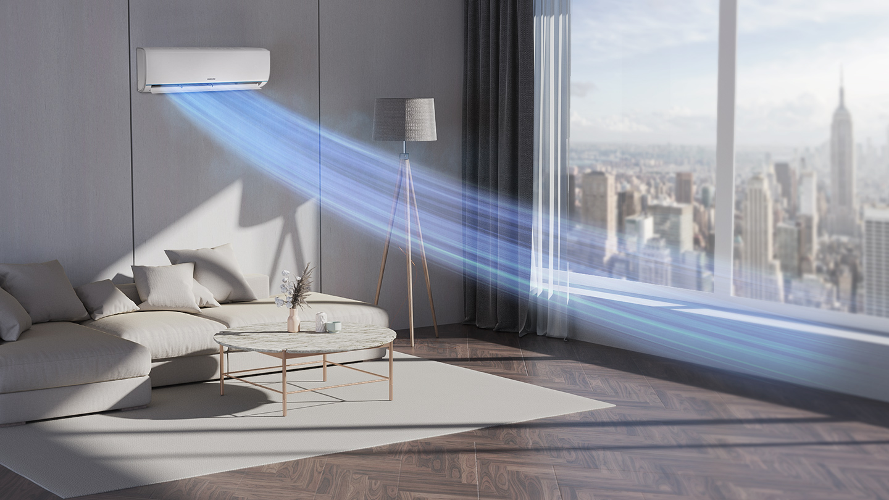
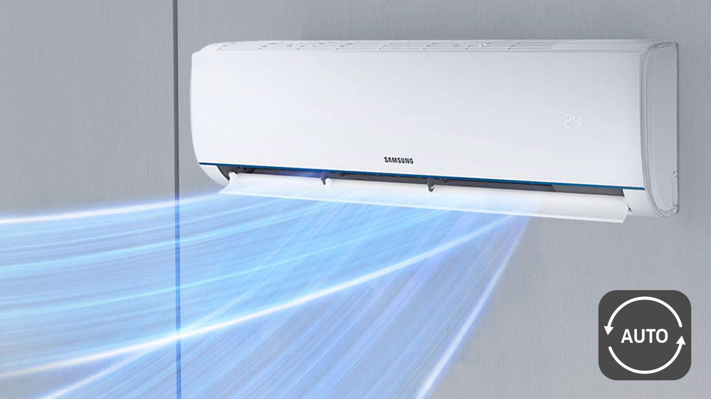

Сниженный уровень потребления энергии и шума
Инверторный компрессор обладает высоким уровнем эффективности во всех сферах работы. Он поддерживает выбранную температуру, не требуя частого включения или выключения. Благодаря этому, кондиционер использует на 73% меньше электроэнергии, а неодимовые магниты обеспечивают модели более тихую и надёжную работу.

Создан для эффективного охлаждения
Режим "Быстрое охлаждение"
В режиме быстрого снижения температуры кондиционер способен охладить воздушные потоки за короткий промежуток времени. Это стало возможным за счет ускоренной на 43% работы компрессора и максимально мощной вентиляции. Продуманный дизайн позволил использовать вентиляторы на 15% больше, воздуховод на 18% просторней и на 31% шире лопасти. Все это способствует более равномерному и дальнему распределению воздуха

HD фильтр -Только чистый воздух
Будьте уверены в чистоте воздуха, которым вы дышите. С HD фильтром кондиционер эффективно улавливает пыль, аллергены, пыльцу плесени, перхоть домашних любимцев и другие частицы загрязнений. Для поддержания чистоты фильтр можно просто постирать и использовать повторно.

Режим комфортного сна
В режиме комфортного сна кондиционер создает оптимальную атмосферу для отдыха. Система автоматического поддержания температуры контролирует климат в комнате. Благодаря этому ваш сон будет глубоким и эффективным, и вы проснетесь отдохнувшим и полным сил.

Двустороннее авто-качание
Прохлада в каждом углу
Насладитесь комфортной атмосферой в вашем доме. Кондиционер поддерживает функцию двустороннего авто-качания, поэтому контролирует направление потока воздуха. Для поддержки оптимальной температуры, прибор генерирует прохладные или теплые потоки в разных направлениях, равномерно и быстро распределяя воздух по комнате.

Антикоррозийное покрытие DuraFinTM для
длительной и стабильной работы
Большинство деталей кондиционера покрыто уникальным антикоррозийным слоем DuraFinTM, поэтому прибор будет работать дольше. Покрытие DuraFinTM эффективно оберегает компрессор от появления ржавчины, и создает условия для высокой производительности. Материал успешно выдержал соляной тест (SST) длительностью 480 часов.